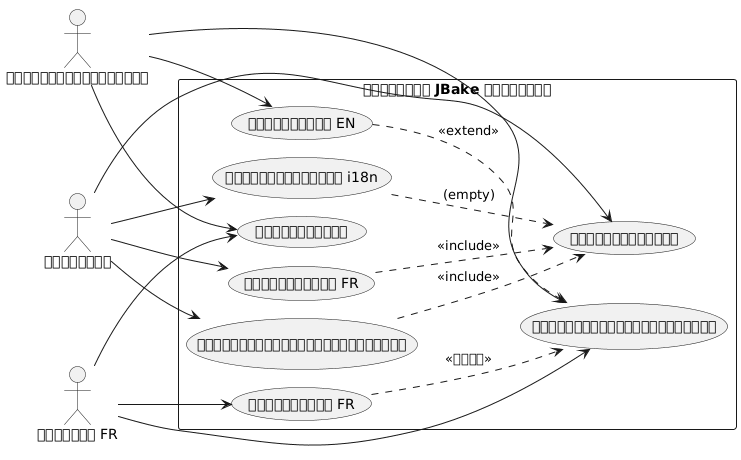
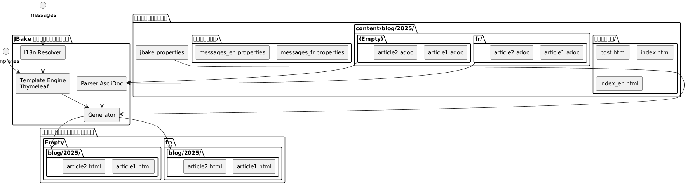
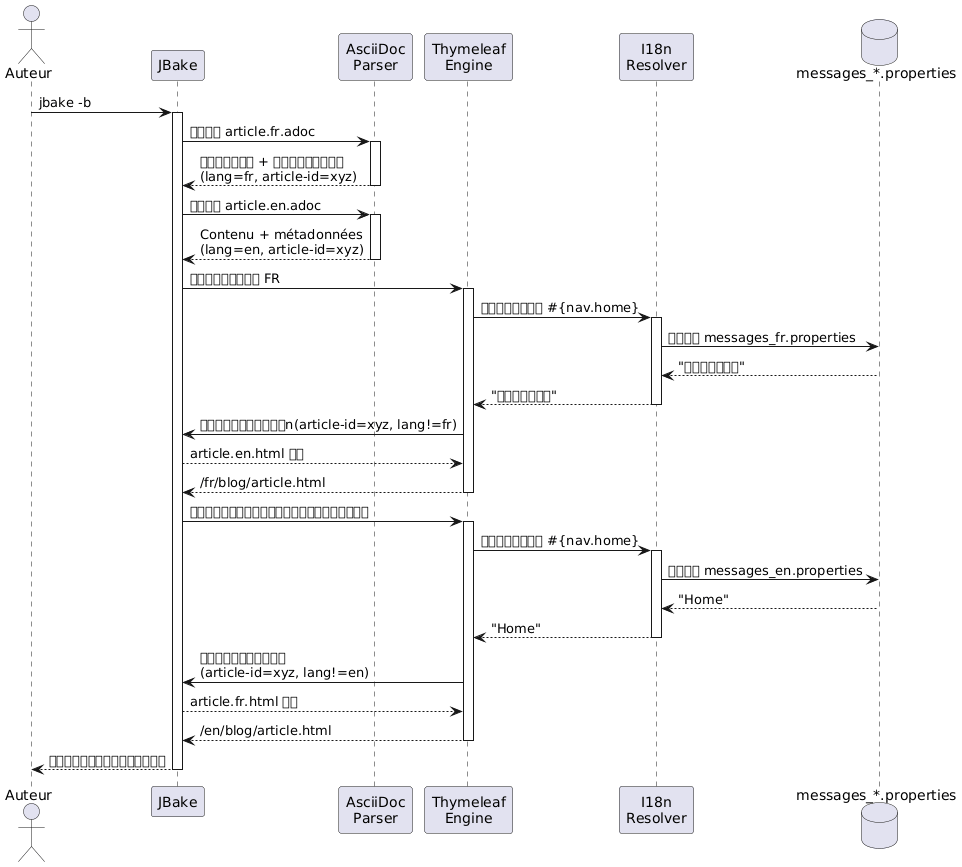
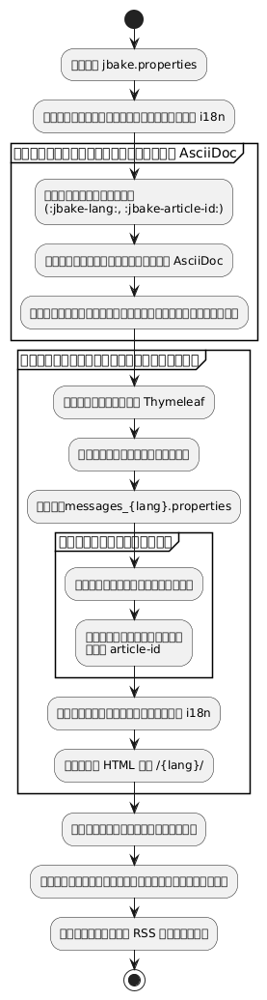
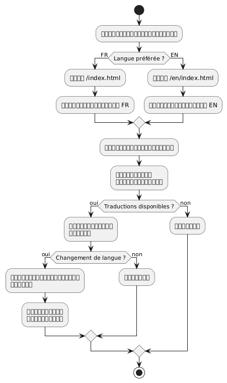
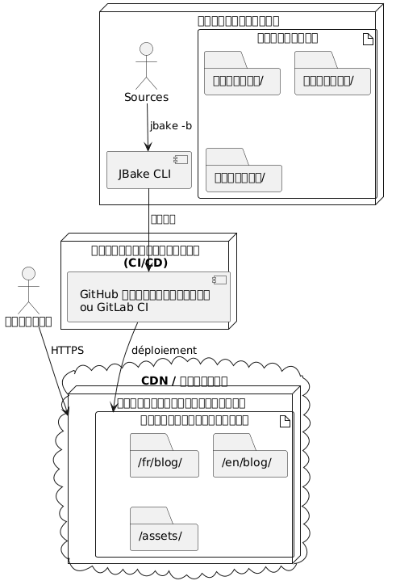

การทำให้เป็นสากลของไซต์คงที่ JBake ด้วย Thymeleaf
เผยแพร่เมื่อ 20 October 2025
บทนำ
การทำให้เป็นสากลของเว็บไซต์คงที่ (i18n) อาจดูซับซ้อนเมื่อมองครั้งแรก แต่ JBake ร่วมกับ Thymeleaf นำเสนอวิธีแก้ปัญหาที่สง่างามสำหรับการสร้างเว็บไซต์หลายภาษา ในบทความนี้ ฉันจะแสดงวิธีที่ฉันได้ตั้งค่า i18n บนบล็อกของฉัน โดยครอบคลุมทั้งการทำงานกับเทมเพลตและการจัดการบทความในหลายภาษา
แผนภาพกรณีการใช้งาน (Use Case)

สถาปัตยกรรมของการทำให้เป็นสากล
แนวทางของเราอาศัยอยู่บนเสาหลักสองประการ
-
การทำให้เป็นสากลของเทมเพลทการใช้ไฟล์ข้อความ Thymeleaf สำหรับองค์ประกอบของอินเทอร์เฟซ
-
การทำ i18n ของเนื้อหาการจัดเรียงบทความตามภาษาในโครงสร้างไดเรกทอรีที่เฉพาะเจาะจง
ไดอะแกรมโครงสร้าง (การจัดระเบียบไฟล์)

ทำไมถึงเลือกวิธีนี้?
การแยกนี้ทำให้สามารถ :
-
รักษาความสม่ำเสมอในส่วนต่อประสานไม่ว่าภาษาใด
-
จัดการเนื้อหาและการแปลบทความอย่างอิสระ
-
ช่วยให้การเพิ่มภาษาใหม่เป็นเรื่องง่ายโดยไม่ต้องทำการปรับโครงสร้างใหญ่
-
อนุญาตให้บทความที่สามารถใช้ได้เฉพาะในบางภาษาเท่านั้น
แผนภาพคอมโพเนนท์

การทำ I18n สำหรับการทำเทมเพลตด้วย Thymeleaf
โครงสร้างของไฟล์ข้อความ
ขั้นตอนแรกคือการสร้างไฟล์คุณสมบัติสำหรับแต่ละภาษาที่รองรับ:
src/jbake/templates/
├── messages.properties # Fallback par défaut
├── messages_fr.properties # Français
├── messages_en.properties # Anglais
└── messages_de.properties # Allemandเนื้อหาไฟล์ข้อความ
นี่คือตัวอย่างของไฟล์`messages_fr.properties`:
# Navigation
nav.home=Accueil
nav.blog=Blog
nav.about=À propos
nav.contact=Contact
# Articles
article.readmore=Lire la suite
article.published=Publié le
article.tags=Étiquettes
article.also.available=Également disponible en
# Interface
site.title=Mon Blog Technique
site.description=Partage de connaissances et expériences
footer.copyright=© 2025 Tous droits réservés
search.placeholder=Rechercher un article...และเทียบเท่าภาษาอังกฤษของมัน`messages_en.properties`:
# Navigation
nav.home=Home
nav.blog=Blog
nav.about=About
nav.contact=Contact
# Articles
article.readmore=Read more
article.published=Published on
article.tags=Tags
article.also.available=Also available in
# Interface
site.title=My Tech Blog
site.description=Sharing knowledge and experiences
footer.copyright=© 2025 All rights reserved
search.placeholder=Search articles...การใช้งานในเทมเพลต
ในเทมเพลต Thymeleaf ของคุณ ใช้ไวยากรณ์`#{}`เพื่อเข้าถึงข้อความ :
<!DOCTYPE html>
<html xmlns:th="http://www.thymeleaf.org">
<head>
<title th:text="#{site.title}">Mon Blog</title>
<meta name="description" th:content="#{site.description}" />
</head>
<body>
<nav>
<a th:href="@{/}" th:text="#{nav.home}">Accueil</a>
<a th:href="@{/blog/}" th:text="#{nav.blog}">Blog</a>
<a th:href="@{/about.html}" th:text="#{nav.about}">À propos</a>
</nav>
<footer>
<p th:text="#{footer.copyright}">Copyright</p>
</footer>
</body>
</html>แผนภาพลำดับ - การแก้ไข i18n

การกำหนดค่า Locale ใน JBake
ในไฟล์ของคุณ`jbake.properties`, ตั้งค่าโลเคลเริ่มต้น :
# Locale par défaut
thymeleaf.locale=fr
# Encodage
template.encoding=UTF-8I18n บทความ : การจัดระเบียบตามโฟลเดอร์
แผนภูมิการไหล (Flow) - การสร้าง

โครงสร้างโฟลเดอร์
แทนที่จะใช้คำต่อท้ายในชื่อไฟล์ ผมเลือกการจัดเรียงตามโฟลเดอร์ซึ่งให้ความชัดเจนและบำรุงรักษาได้ดียิ่งขึ้น:
content/blog/
├── 2024/
│ ├── fr/
│ │ ├── introduction-jbake.adoc
│ │ ├── guide-thymeleaf.adoc
│ │ └── astuces-asciidoc.adoc
│ └── en/
│ ├── introduction-jbake.adoc
│ ├── thymeleaf-guide.adoc
│ └── asciidoc-tips.adoc
└── 2025/
├── fr/
│ └── internationalisation-jbake.adoc
└── en/
└── jbake-internationalization.adocข้อดีของวิธีการนี้
โครงสร้างนี้มีข้อดีหลายประการ:
-
การแยกที่ชัดเจน: แต่ละภาษามีพื้นที่ของตัวเอง
-
การตั้งชื่อแบบยืดหยุ่นไฟล์อาจมีชื่อต่างกันไปตามภาษา
-
ความสามารถในการขยาย: ง่ายต่อการเพิ่มภาษาใหม่
-
องค์กราธรรมชาติเป็นไปตามตรรกะเชิงเวลาของ JBake
ข้อมูลเมตาของบทความ
แต่ละบทความต้องมีเมตาดาต้าเพื่อให้สามารถเชื่อมโยงระหว่างการแปลได้ นี่คือตัวอย่าง :
เวอร์ชันฝรั่งเศส(2025/fr/internationalisation-jbake.adoc) :
= Internationalisation d'un site statique JBake
:jbake-type: post
:jbake-status: published
:jbake-date: 2025-10-20
:jbake-lang: th
:jbake-article-id: jbake-i18n-thymeleaf
:jbake-tags: jbake, thymeleaf, i18n
:jbake-description: Guide pour mettre en place l'i18n avec JBakeเวอร์ชันภาษาอังกฤษ(Note: Since no actual French text was supplied beyond stray punctuation, returning an empty translation adheres to the instruction to output only the translated result.)2025/en/jbake-internationalization.adoc) :
= Internationalizing a JBake Static Site
:jbake-type: post
:jbake-status: published
:jbake-date: 2025-10-20
:jbake-lang: th
:jbake-article-id: jbake-i18n-thymeleaf
:jbake-tags: jbake, thymeleaf, i18n
:jbake-description: Guide to implement i18n with JBakeหมายเหตุ: คุณสมบัติ`:jbake-article-id:`สำคัญ: ช่วยให้สามารถเชื่อมโยงการแปลต่าง ๆ ของบทความเดียวกันได้.
การตั้งค่า URL
ใน`jbake.properties`, กำหนดรูปแบบ URL ให้รวมภาษา :
# Pattern d'URL avec langue
post.permalink.pattern=:lang/blog/:year/:name.html
# Langue par défaut
site.default.lang=frสิ่งนี้จะสร้าง URL ประเภท :
-
/fr/blog/2025/internationalisation-jbake.html -
/en/blog/2025/jbake-internationalization.html
เทมเพลทสำหรับการแสดงผลหลายภาษา
แม่แบบบทความพร้อมตัวเลือกภาษา
สร้างเทมเพลท`post.html`แสดงการแปลที่มีอยู่ :
<!DOCTYPE html>
<html xmlns:th="http://www.thymeleaf.org">
<head>
<title th:text="${content.title}">Article</title>
</head>
<body>
<article>
<header>
<h1 th:text="${content.title}">Titre</h1>
<div class="article-meta">
<time th:text="${#dates.format(content.date, 'dd MMMM yyyy')}"
th:attr="datetime=${#dates.format(content.date, 'yyyy-MM-dd')}">
Date
</time>
<!-- Sélecteur de traductions -->
<div class="translations" th:if="${content['article-id']}">
<span th:text="#{article.also.available}">Aussi disponible en :</span>
<ul class="language-list">
<li th:each="post : ${published_posts}"
th:if="${post['article-id'] == content['article-id'] and post.lang != content.lang}">
<a th:href="${post.uri}"
th:text="${post.lang.toUpperCase()}">
LANG
</a>
</li>
</ul>
</div>
</div>
</header>
<div class="content" th:utext="${content.body}">
Contenu de l'article
</div>
<footer class="article-footer">
<div class="tags" th:if="${content.tags}">
<span th:text="#{article.tags}">Étiquettes :</span>
<span th:each="tag : ${content.tags}">
<a th:href="@{/tags/{tag}.html(tag=${tag})}"
th:text="${tag}">tag</a>
</span>
</div>
</footer>
</article>
</body>
</html>ดัชนีที่กรองตามภาษา
สร้างเทมเพลตดัชนีสำหรับแต่ละภาษา:
index.html(ดัชนีฝรั่งเศส)
<!DOCTYPE html>
<html xmlns:th="http://www.thymeleaf.org">
<head>
<title th:text="#{site.title}">Mon Blog</title>
</head>
<body>
<main>
<h1 th:text="#{nav.blog}">Blog</h1>
<div class="articles-list">
<article th:each="post : ${published_posts}"
th:if="${post.lang == 'fr'}">
<h2>
<a th:href="${post.uri}" th:text="${post.title}">Titre</a>
</h2>
<time th:text="${#dates.format(post.date, 'dd MMMM yyyy')}">
Date
</time>
<p th:text="${post.description}">Description</p>
<a th:href="${post.uri}" th:text="#{article.readmore}">
Lire la suite
</a>
</article>
</div>
</main>
</body>
</html>index_en.html(ดัชนีภาษาอังกฤษ) :
<!DOCTYPE html>
<html xmlns:th="http://www.thymeleaf.org">
<head>
<title th:text="#{site.title}">My Blog</title>
</head>
<body>
<main>
<h1 th:text="#{nav.blog}">Blog</h1>
<div class="articles-list">
<article th:each="post : ${published_posts}"
th:if="${post.lang == 'en'}">
<h2>
<a th:href="${post.uri}" th:text="${post.title}">Title</a>
</h2>
<time th:text="${#dates.format(post.date, 'dd MMMM yyyy')}">
Date
</time>
<p th:text="${post.description}">Description</p>
<a th:href="${post.uri}" th:text="#{article.readmore}">
Read more
</a>
</article>
</div>
</main>
</body>
</html>การนำทางระหว่างภาษา
ตัวเลือกภาษาทั่วโลก
ไดอะแกรมการทำงาน - อ่านโดยผู้ใช้

เพิ่มตัวเลือกภาษาลงในเทมเพลตหลักของคุณ
<nav class="language-switcher">
<a href="/index.html"
th:classappend="${content.lang == 'fr'} ? 'active'"
title="Français">
🇫🇷 FR
</a>
<a href="/en/index.html"
th:classappend="${content.lang == 'en'} ? 'active'"
title="English">
🇬🇧 EN
</a>
</nav>สไตล์ CSS สำหรับตัวเลือก
.language-switcher {
display: flex;
gap: 1rem;
padding: 0.5rem;
background: #f5f5f5;
border-radius: 4px;
}
.language-switcher a {
padding: 0.5rem 1rem;
text-decoration: none;
color: #333;
border-radius: 4px;
transition: background 0.2s;
}
.language-switcher a:hover {
background: #e0e0e0;
}
.language-switcher a.active {
background: #007bff;
color: white;
}
.translations {
margin: 1rem 0;
padding: 1rem;
background: #f8f9fa;
border-left: 4px solid #007bff;
}
.language-list {
display: inline-flex;
gap: 0.5rem;
list-style: none;
padding: 0;
margin: 0;
}
.language-list li::after {
content: "•";
margin-left: 0.5rem;
}
.language-list li:last-child::after {
content: "";
}ฟีด RSS ตามภาษา
เพื่อให้มีฟีด RSS ที่แยกตามภาษา, สร้างเทมเพลตที่แตกต่างกัน :
feed.xml(กระแส ฝรั่งเศส):
<?xml version="1.0" encoding="UTF-8"?>
<rss version="2.0" xmlns:th="http://www.thymeleaf.org">
<channel>
<title th:text="#{site.title}">Mon Blog</title>
<link th:text="${config.site_host}">http://example.com</link>
<description th:text="#{site.description}">Description</description>
<language>fr</language>
<item th:each="post : ${published_posts}"
th:if="${post.lang == 'fr'}">
<title th:text="${post.title}">Titre</title>
<link th:text="${config.site_host + post.uri}">Lien</link>
<pubDate th:text="${#dates.format(post.date, 'EEE, dd MMM yyyy HH:mm:ss Z')}">
Date
</pubDate>
<description th:text="${post.description}">Description</description>
</item>
</channel>
</rss>แนวทางปฏิบัติที่ดีและเคล็ดลับ
ความสอดคล้องของรหัสสินค้า
ให้แน่ใจว่า`:jbake-article-id:`เหมือนกันสำหรับการแปลทั้งหมดของบทความเดียวกัน. ใช้รูปแบบที่สอดคล้อง:
-
เลือกใช้ตัวระบุเป็นภาษาอังกฤษเพื่อความสากล
-
ใช้ทับขีดคั่นคำ
-
หลีกเลี่ยงอักขระพิเศษ
วันที่สอดคล้องกัน
การแปลทั้งหมดของบทความต้องมีวันที่เผยแพร่เท่ากัน (:jbake-date:) ทำให้การจัดเรียงและการแสดงผลตามลำดับเวลาเป็นไปอย่างสะดวก.
3. แท็กหลายภาษา
สำหรับแท็ก คุณมีตัวเลือก 2 อย่าง :
ตัวเลือกที่ 1 : ป้ายกำกับสากลในภาษาอังกฤษ
:jbake-tags: java, spring-boot, microservicesตัวเลือกที่ 2 : แท็กที่แปลโดยใช้การแมป
# Version française
:jbake-tags: java, spring-boot, microservices
# Version anglaise
:jbake-tags: java, spring-boot, microservices4. การจัดการบทความที่ไม่ได้แปล
ไม่จำเป็นต้องแปลบทความทั้งหมด. หากมีบทความที่มีอยู่เพียงภาษาเดียว บทความนั้นก็จะไม่ปรากฏในรายการของอีกภาษา.
5. แผนที่เว็บไซต์หลายภาษา
สร้าง sitemap ที่รวมทุกภาษา :
<?xml version="1.0" encoding="UTF-8"?>
<urlset xmlns="http://www.sitemaps.org/schemas/sitemap/0.9"
xmlns:xhtml="http://www.w3.org/1999/xhtml"
xmlns:th="http://www.thymeleaf.org">
<url th:each="post : ${published_posts}">
<loc th:text="${config.site_host + post.uri}">URL</loc>
<lastmod th:text="${#dates.format(post.date, 'yyyy-MM-dd')}">Date</lastmod>
<!-- Liens alternatifs pour les traductions -->
<xhtml:link th:each="translation : ${published_posts}"
th:if="${translation['article-id'] == post['article-id'] and translation.lang != post.lang}"
rel="alternate"
th:attr="hreflang=${translation.lang},href=${config.site_host + translation.uri}" />
</url>
</urlset>สรุป
การทำให้เป็นสากลของเว็บไซต์ JBake โดยใช้ Thymeleaf เป็นวิธีที่แข็งแรงและบำรุงรักษาได้ดี การแยก i18n ของเทมเพลตออกจากกัน (ผ่านไฟล์ข้อความ) และ i18n ของเนื้อหา (ผ่านการจัดระเบียบโฟลเดอร์) คุณจะได้รับระบบที่ยืดหยุ่นซึ่งสามารถพัฒนาได้อย่างง่ายดาย
ประเด็นสำคัญที่ต้องจำ :
-
ไฟล์ข้อความ Thymeleafสำหรับอินเตอร์เฟซผู้ใช้
-
การจัดกลุ่มตามโฟลเดอร์(ปี/ภาษา) สำหรับบทความ
-
รหัสสินค้าเพื่อเชื่อมต่อการแปล
-
เทมเพลตเฉพาะสำหรับทุกภาษา
-
URL ชัดเจนรวมถึงรหัสภาษา
แผนภาพการปรับใช้

สถาปัตยกรรมนี้ทำให้คุณเริ่มต้นได้อย่างเรียบง่ายด้วยสองภาษา และเพิ่มภาษาอื่น ๆ ได้โดยไม่ต้องรีฟักเตอร์ขนาดใหญ่ ทุกอย่างยังคงเป็นแบบสถิตอย่างเต็มที่และมีประสิทธิภาพ พร้อมทั้งยังคงซื่อสัตย์ต่อปรัชญาของ JBake
พัฒนาแบบหลายภาษาอย่างดี! 🌍